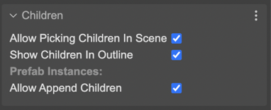

Children properties
The containers and layers are objects with children, and share children-based properties.
The Children properties are not part of the Phaser API, they are used only by the editor, in design-time.
The Allow Picking Children In Scene property allows picking a child in the scene. If it is disable, you cannot pick a child by clicking in the scene. This is useful if you want to manipulate the parent container (or layer) and children as a single object.
The Show Children In Outline parameter is similar. It allows showing the container or layer children in the Outline view.
The Allow Append Children parameter indicates this Layer or Container allows adding new children in prefab instances. This parameter has sense only if the object has a nested prefab scope. Learn more about adding children to a prefab instance.